Elke tredeop maatgemaakt.
Houten trappen, keukens en kasten die echt in jouw huis passen. Joeri meet zelf op, tekent mee en plaatst alles in de regio rond Mechelen.
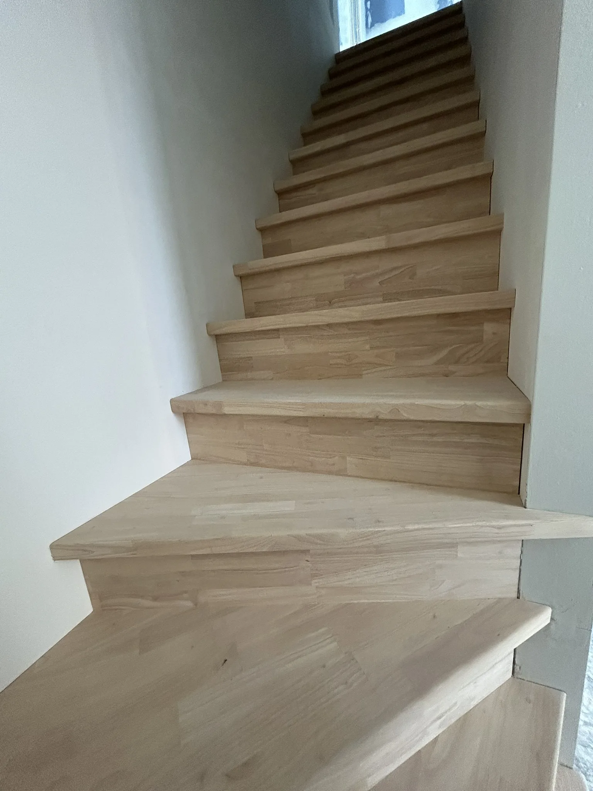
Ons vak, trede per trede
Een trap is het eerste wat je ziet als je binnenkomt. Joeri maakt ze in eik of beuk, als bekleding op een betontrap of volledig in hout. Staat er een oude trap in de weg, dan breken we die ook uit.
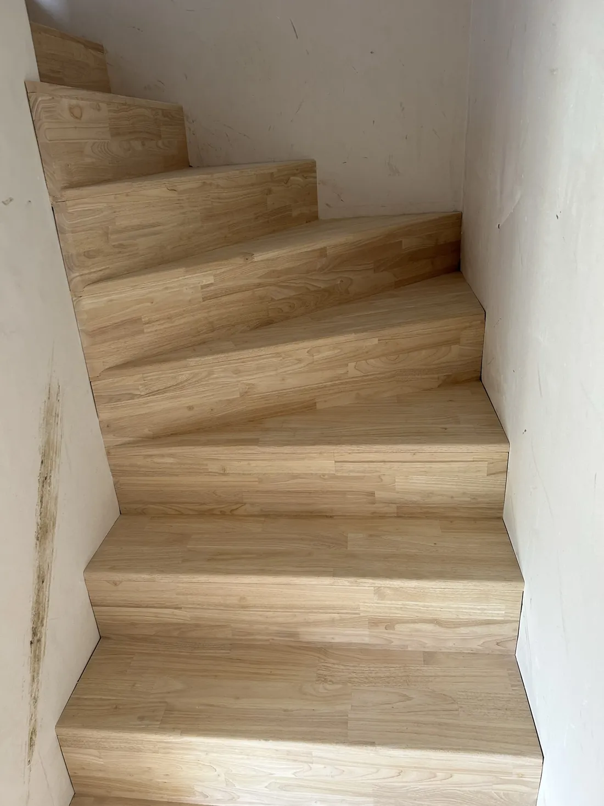
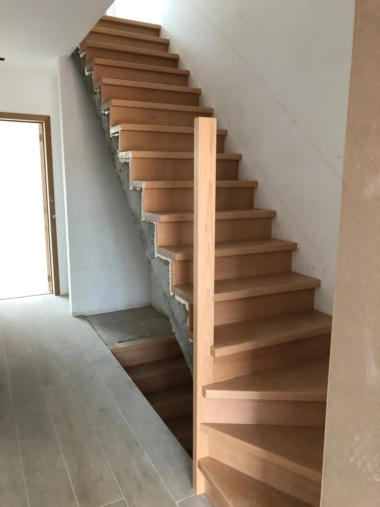
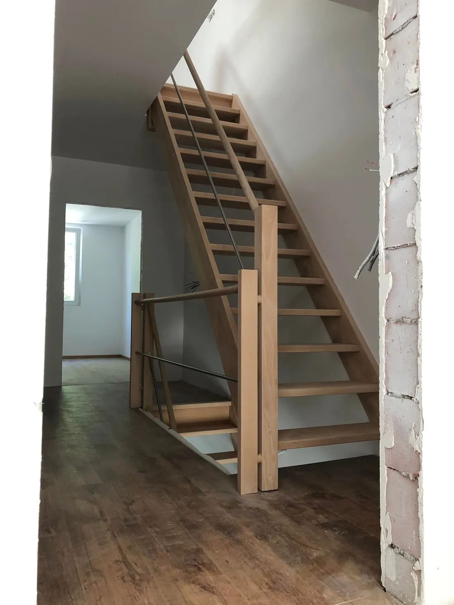
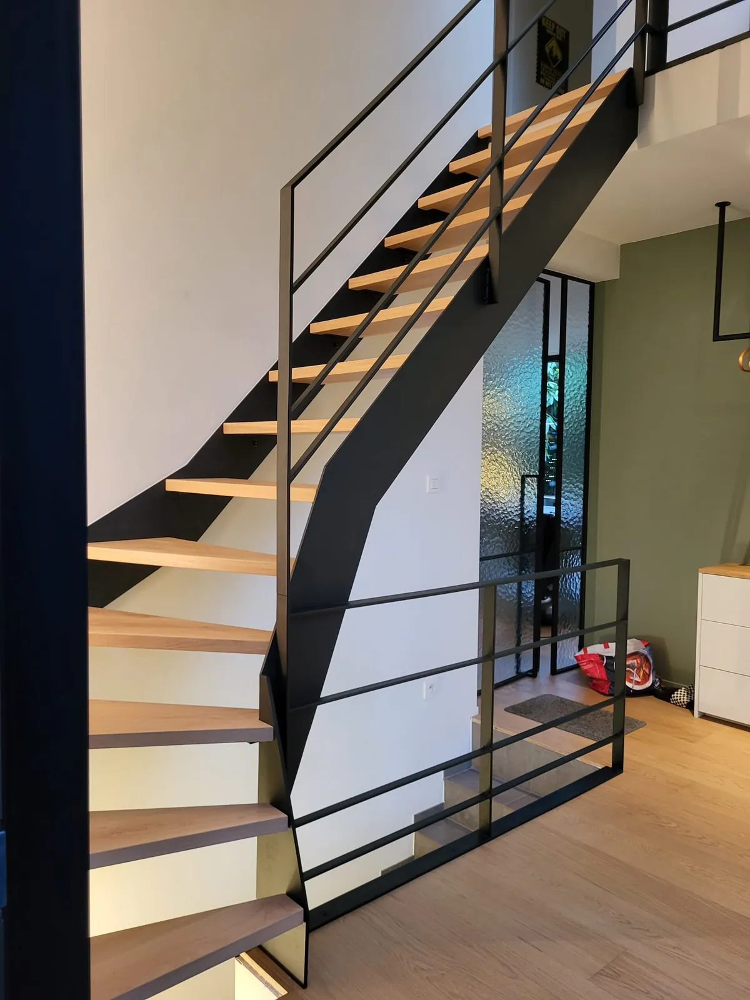
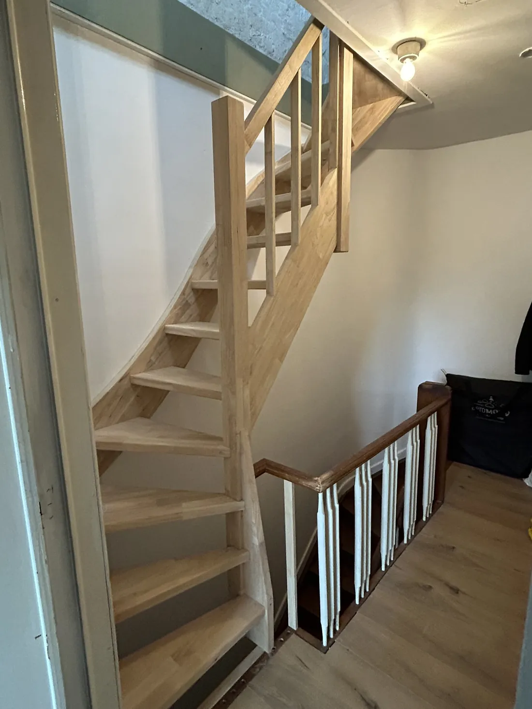
Een keuken die klopt
Strak en modern of warm en landelijk. De stenen werkbladen kiezen we samen, de houten werkbladen maakt Joeri zelf.
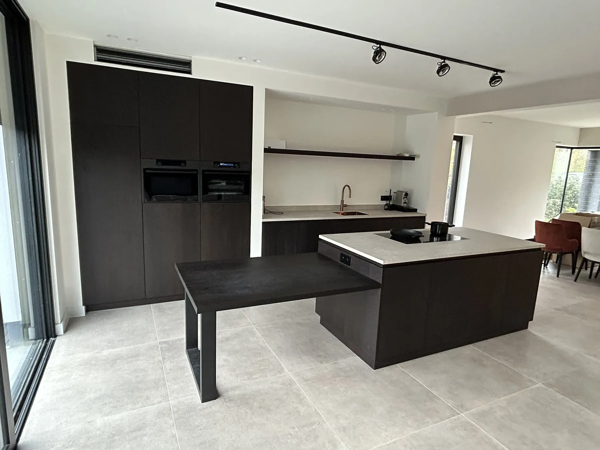
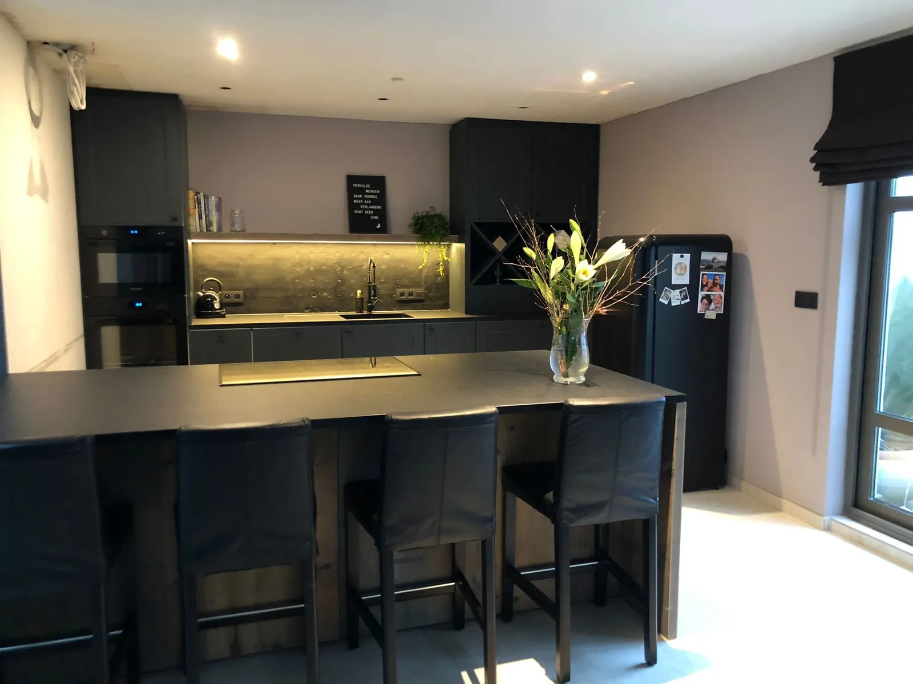
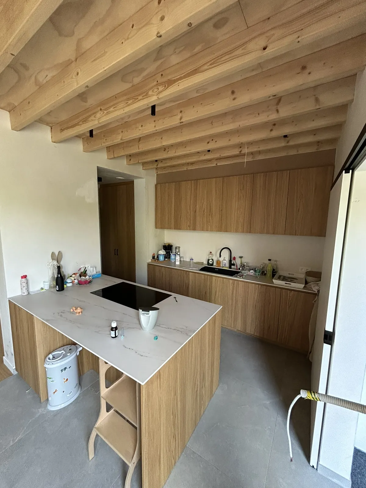
We starten in je eigen keuken en meten alles nauwkeurig op.
Van de eerste schets tot de laatste greep, op jouw smaak afgestemd.
Oude keuken eruit, toestellen erin, alles netjes afgewerkt.
Geen centimeter verloren
- 03.1DressingsElke ochtend meteen een helder overzicht van je kleren.
- 03.2InbouwkastenOp maat van je slaapkamer of woonkamer, in hoogwaardige materialen.
- 03.3BinnendeurenIn puur hout of geschilderd, samen met professionele schilders.
- 03.4Parket en laminaatDe basis van je interieur, met zorg gelegd.
- 03.5BadkamersVan a tot z, met vertrouwde vakmensen waar nodig.
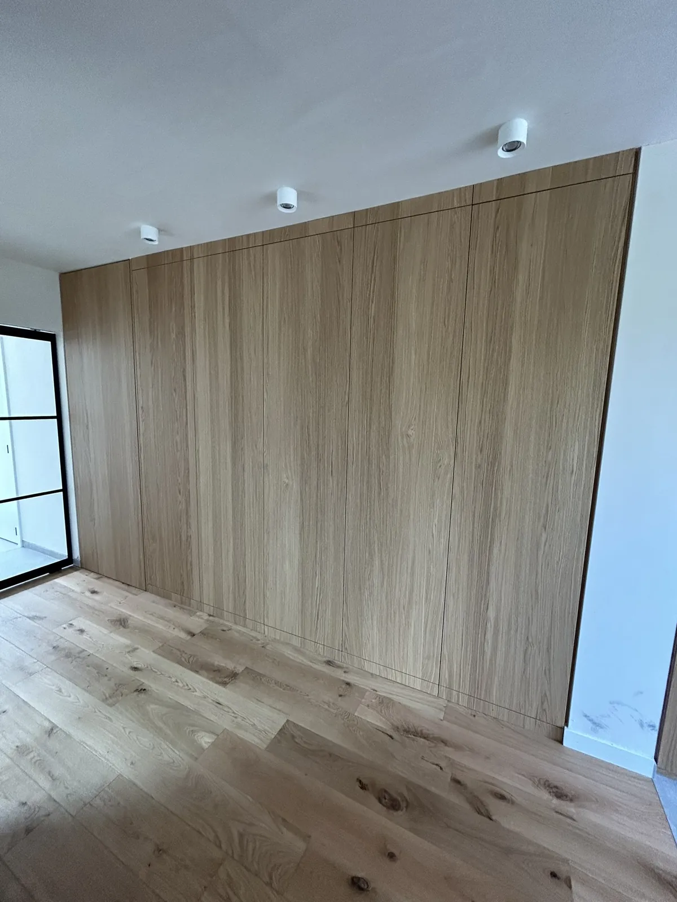
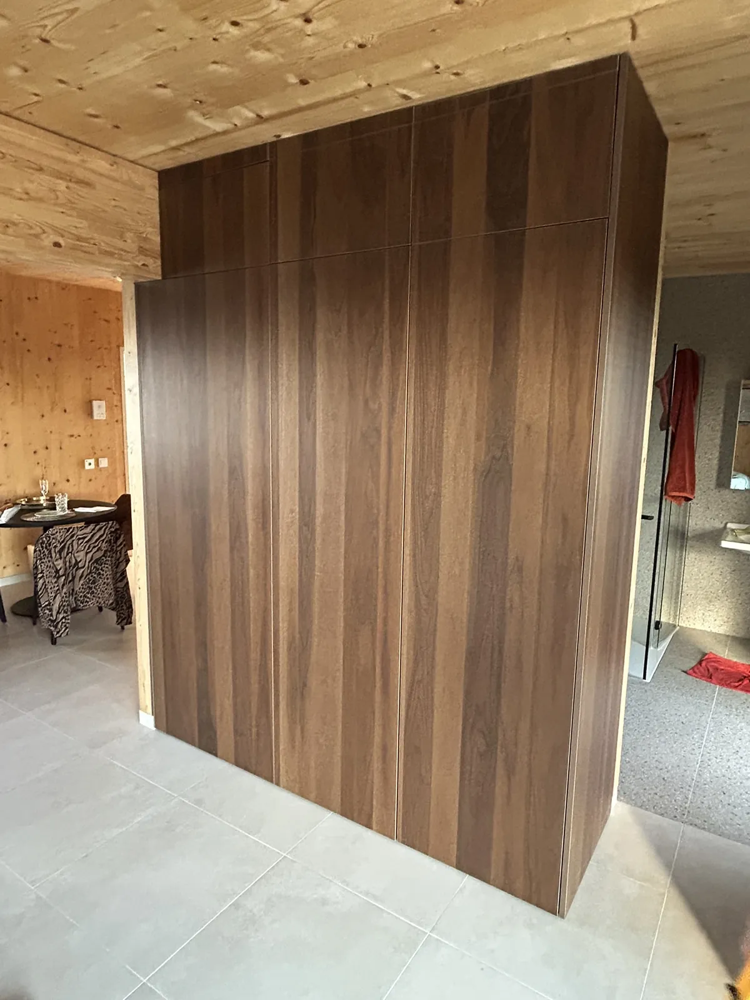
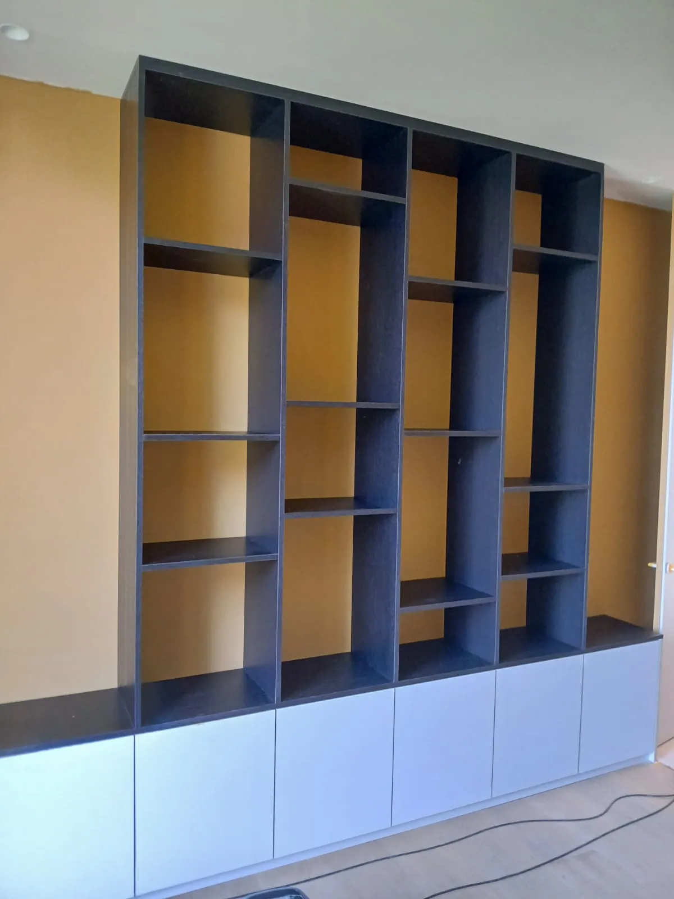
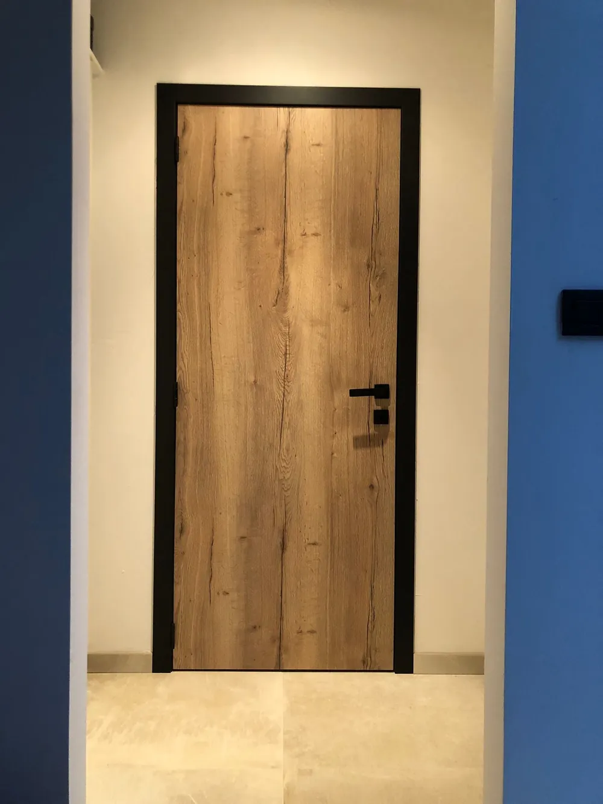
Joeri luistert, geeft advies, en bekijkt samen wat mogelijk is. Knap werk, top ervaring!
Hazel De Herdt
"Joeri heeft fantastisch werk geleverd bij het weghalen en verplaatsen van twee trappen."
Tom Bronders"Alles verliep vlot en werd tot in de puntjes netjes afgewerkt, en dat tegen een uitstekende prijs-kwaliteitsverhouding."
Kevin VD Brande"Joeri leverde top werk met onze keldertrap en luik. Alles mooi afgewerkt en supersnelle service."
Yani Teugels"Goede communicatie, vriendelijk en correct werk geleverd. Ben enorm tevreden van het resultaat!"
Ilse Kwanten
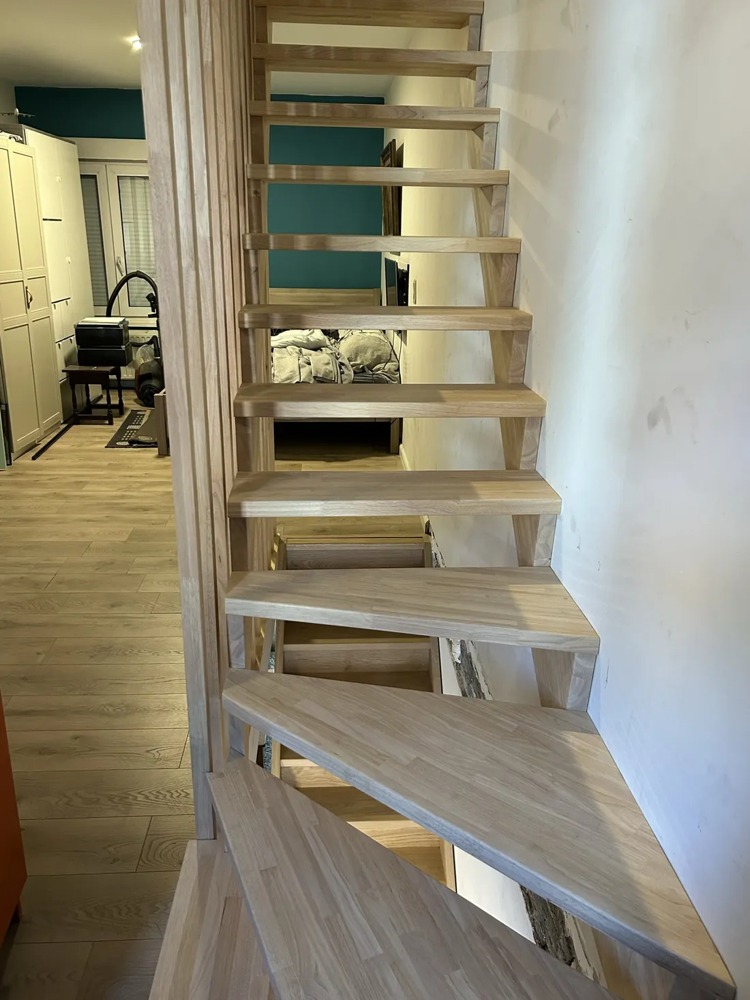
Wat kost jouw project?
Bel of mail Joeri met wat je in gedachten hebt. Je krijgt een duidelijke offerte, gratis en zonder verplichting.
- Telefoon
- 0472 98 13 20
- Regio
- Zo'n 20 km rond Mechelen: Lier, Duffel, Bornem, Vilvoorde en alles ertussen.
- Volg